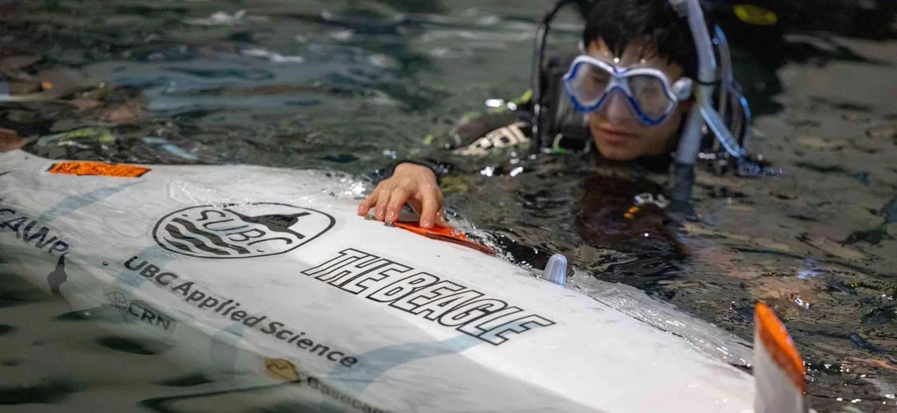
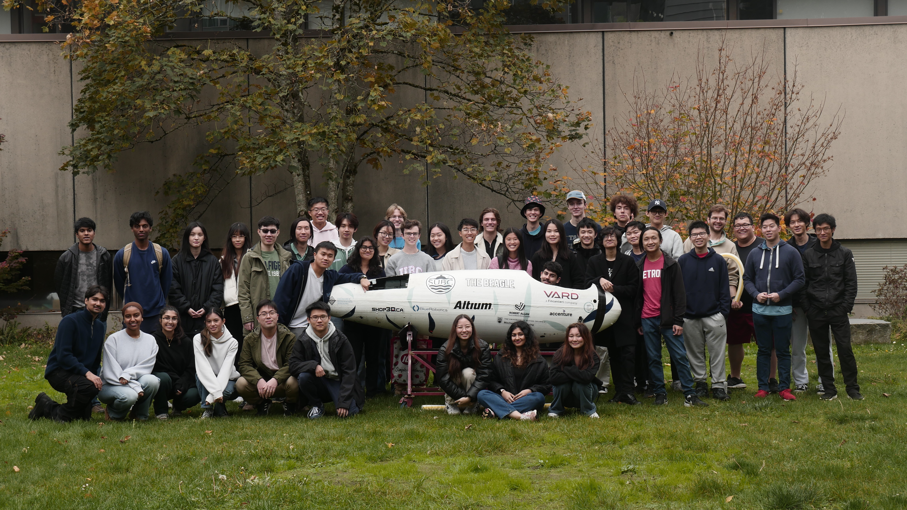
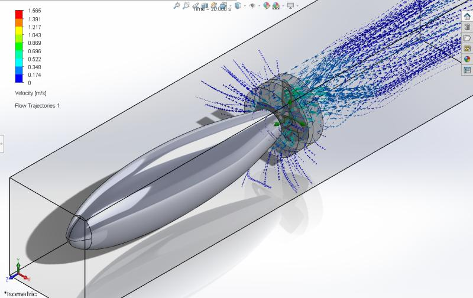

SUBC

Overview
SUBC (UBC Submarine Design Team) designs and builds a human-powered submarine to compete in international races. In my first year, I joined the drivetrain and propulsion team. One of my main projects was helping design a toroidal propeller. I focused on evaluating candidate geometries with CFD, selecting a promising design, and supporting manufacturing using 3D printing and epoxy resin.
My Contributions
- Performed CFD analysis to compare propeller candidates and select the best design.
- Supported manufacturing by preparing the 3D-printed parts and epoxy finishing process.
- Worked on drivetrain reliability, including replacing a chain drive with a gear drive to eliminate skipping.
- Built a test jig to measure propeller characteristics outside the submarine.
Positions
- Drivetrain and propulsion member (2023–2024)
- Propulsion lead (2024–2025)
- Team captain (2024–2025)
Technical Highlights
- Analysis: CFD-driven selection of the propeller geometry.
- Manufacturing: 3D-printed core with epoxy resin finishing.
Media
-
SUBC team photo

-
CFD analysis
